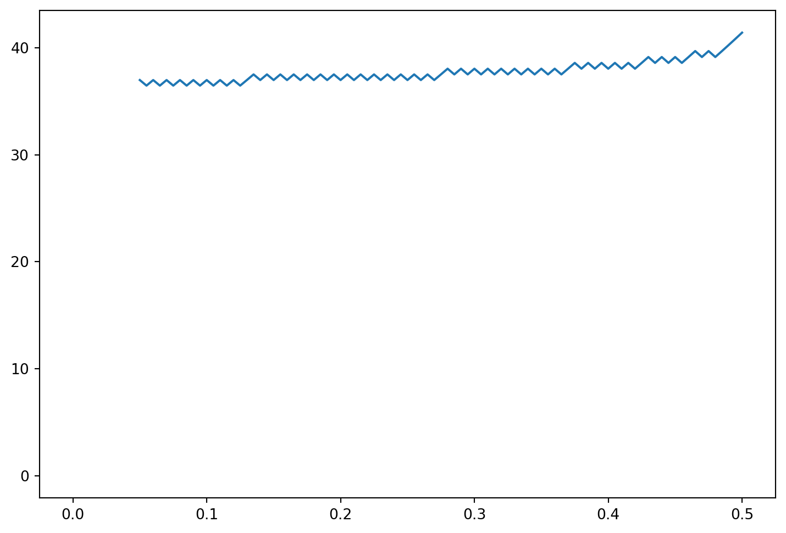
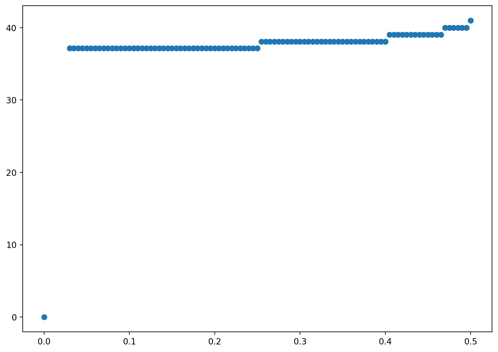
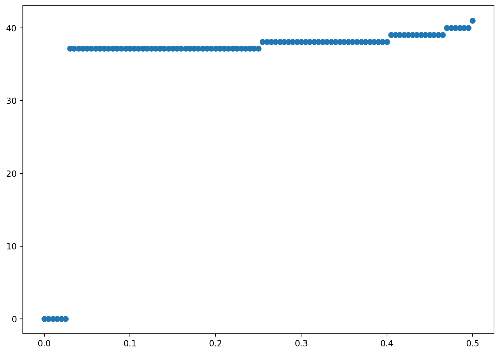

In this chapter, we will introduce two principal numerical methods for valuing derivative securities: Monte Carlo and binomial models. We will consider two applications: valuing European options in the presence of stochastic volatility with Monte Carlo and valuing American options via binomial models. Additional applications of these methods will be presented in ?sec-c_montecarlo. Throughout the chapter, we will assume there is a constant risk-free rate. The last section, while quite important, could be skimmed on first reading—the rest of the book does not build upon it.
6.1 Introduction to Monte Carlo
According to our risk-neutral pricing ?eq-riskneutralformula, the value of a security paying an amount \(x\) at date \(T\) is \[
\mathrm{e}^{-rT}E^R[x]\;.
\tag{6.1}\]
To estimate this by Monte-Carlo means to simulate a sample of values for the random variable \(x\) and to estimate the expectation by averaging the sample values.1. Of course, for this to work, the sample must be generated from a population having a distribution consistent with the risk-neutral probabilities.
The simplest example is valuing a European option under the Black-Scholes assumptions. Of course, for calls and puts, this is redundant, because we already have the Black-Scholes formulas. Nevertheless, we will describe how to do this for the sake of introducing the Monte Carlo method. In the case of a call option, the random variable \(x\) in Equation 6.1 is \(\max(0,S(T)-K)\). To simulate a sample of values for this random variable, we need to simulate the terminal stock price \(S(T)\). This is easy to do, because, under the Black-Scholes assumptions, the logarithm of \(S(T)\) is normally distributed under the risk-neutral measure with mean \(\log S(0)+\mathrm{n}u T\) and variance \(\sigma^2T\), where \(\mathrm{n}u=r-q-\sigma^2/2\). Thus, we can simulate values for \(\log S(T)\) as \(\log S(0)+\mathrm{n}u T + \sigma\sqrt{T}z\), where \(z\) is a standard normal. We can average the simulated values of \(\max(0,S(T)-K)\), or whatever the payoff of the derivative is, and then discount at the risk-free rate to compute the date–0 value of the derivative. This means that we generate some number \(M\) of standard normals \(z_i\) and estimate the option value as \(\mathrm{e}^{-rT}\bar{x}\), where \(\bar{x}\) is the mean of \[x_i = \max\left(0,\mathrm{e}^{\log S(0)+\mathrm{n}u T + \sigma\sqrt{T}z_i}-K\right)\; .\] To value options that are path-dependent we need to simulate the path of the underlying asset price. Path-dependent options are discussed in Chaps.~\(\ref{c_exotics}\) and~\(\ref{c_montecarlo}\).
There are two main drawbacks to Monte-Carlo methods. First, it is difficult (though not impossible) to value early-exercise features.2 To value early exercise, we need to know the value at each date if not exercised, to compare to the intrinsic value. One could consider performing a simulation at each date to calculate the value if not exercised, but this value depends on the option to exercise early at later dates, which cannot be calculated without knowing the value of being able to exercise early at even later dates, etc. In contrast, the binomial model (and finite difference models discussed in ?sec-c_pde) can easily handle early exercise but cannot easily handle path dependencies.
The second drawback of Monte Carlo methods is that they can be quite inefficient in terms of computation time (though, as will be explained in ?sec-c_montecarlo, they may be faster than alternative methods for derivatives written on multiple assets). As in statistics, the standard error of the estimate depends on the sample size. Specifically, we observed in ?sec-s_statistics that, given a random sample \(\{x_1,\ldots,x_M\}\) of size \(M\) from a population with mean \(\mu\) and variance \(\sigma^2\), the best estimate of \(\mu\) is the sample mean \(\bar{x}\), and the standard error of \(\bar{x}\) (which means the standard deviation of \(\bar{x}\) in repeated samples) is best estimated by \[
\sqrt{\frac{1}{M(M-1)}\left(\sum_{i=1}^{M} x_i^2-M\bar{x}^2\right)}\;.
\tag{6.2}\] Recall that \(\bar{x}\) plus or minus 1.96 standard errors is a 95% confidence interval for \(\mu\) when the \(x_i\) are normally distributed. In the context of European option valuation, the expression Equation 6.2 gives the standard error of the estimated option value at maturity, and multiplication of Equation 6.2 by \(\mathrm{e}^{-rT}\) gives the standard error of the estimated date–0 option value.
To obtain an estimate with an acceptably small standard error may require a large sample size and hence a relatively large amount of computation time. The complexities of Monte Carlo methods arise from trying to reduce the required sample size. In ?sec-c_montecarlo, we will describe two such methods (antithetic variates and control variates). For those who want to engage in a more detailed study of Monte Carlo methods, the book of Glasserman (Glasserman 2004) is highly recommended. J"ackel (Jäckel 2002) is useful for more advanced readers, and Clewlow and Strickland (Clewlow and Strickland 1998) and Brandimarte (Brandimarte 2002) are useful references that include computer code.
Monte Carlo Valuation of a European Call
We will illustrate Monte Carlo by valuing a European call under the Black-Scholes assumptions. We will also estimate the delta by each of the methods described in Section 6.3 and~\(\ref{s_montecarlogreeks2}\). Of course, we know the call value and its delta from the Black-Scholes formulas, and they can be used to evaluate the accuracy of the Monte Carlo estimates. We use the code in Chapter (#sec-c_continuoustime?). In this circumstance, we only need to simulate the price of the underlying at the option maturity rather than the entire path of the price process. Therefore we set \(m=1\). However, we use a large number of paths, \(n=10000\) to get a large sample of terminal stock prices.
Code
# Simulate Geometric Brownian Motionimport numpy as npimport matplotlib.pyplot as plt# number of pathsn =10000#number of divisionsm =1# Interest rate (We set the drift equal to the interest rate for the risk neutral measure)r =0.1# Volatilitysig =0.2# Initial Stock PriceS0 =42# MaturityT =0.5#Strike PriceK=40# Delta tdt = T/m# Driftdrift = (r-0.5*sig**2)# Volatilityvol = sig * np.sqrt(dt)t = np.array(range(0,m +1,1)) * dt# seed for random generatorseed=2020# define a random generatornp.random.seed(seed)inc = np.zeros(shape = (m +1, n))inc[1:] = np.transpose(np.random.normal(loc =0, scale = vol,size = (n,m)))St = np.zeros(shape = (m +1, n))St = S0 * np.exp(np.cumsum(inc,axis=0) + (drift * t[0:m +1])[:,None])St1 = S0 * np.exp(-np.cumsum(inc,axis=0) + (drift * t[0:m +1])[:,None])
As before, this code generates two samples \(St\), which adds the simulated standard (zero mean) normal random variable, and \(St1\) which subtracts the simulated (zero mean) standard normal random variable. Each sample produces and estimate for the Black-Scholes European call option.
Code
cc=np.maximum(St[m,:]-K,0)cp = np.mean(cc) * np.exp(-r * T)cc1=np.maximum(St1[m,:]-K,0)*np.exp(-r * T)cp1= np.mean(np.maximum(St1[m,:]-K,0)) * np.exp(-r * T)print('The first sample gives an estimated call price=',cp)print('The second sample gives an estimated call price=',cp1)bsc = (cp+cp1)/2print('The average of the two estimates=',bsc)
The first sample gives an estimated call price= 4.791646287615179
The second sample gives an estimated call price= 4.687624646438364
The average of the two estimates= 4.739635467026771
The true call price is given by
Code
from scipy import statsimport numpy as npfrom scipy.optimize import minimize, minimize_scalardef blackscholes(S0, K, r, sig, T, call =True):'''Calculate option price using B-S formula. Args: S0 (num): initial price of underlying asset. K (num): strick price. sig (num): Black-Scholes volatility. T (num): maturity. call (bool): True returns call price, False returns put price. Returns: num ''' d1 = (np.log(S0/K) + (r + sig**2/2) * T)/(sig*np.sqrt(T)) d2 = d1 - sig*np.sqrt(T)# norm = sp.stats.norm norm = stats.normif call:return S0 * norm.cdf(d1,0,1) - K * np.exp(-r * T) * norm.cdf(d2,0, 1)else:return S0 * norm.cdf(-d1,0,1) - K * np.exp(-r * T) * norm.cdf(-d2,0, 1)truebsc = blackscholes(S0,K,r,sig,T)print('The exact Black Scholes Price is=', truebsc)
The exact Black Scholes Price is= 4.759422392871532
Notice that even with 10000 data points for each sample the individual estimates are not very accurate compared to the exact Black Scoles price. This is a well known problem that is difficult to estimate the mean, even with a lot of data and is a drawback to Monte Carlo as discussed earlier. However, the average of the two prices is sgnificantly more accurate. This is an example of an antithetic variable which is discussed later. One simple intution is the two samples yield negatively correlated errors; if the plus sample is two high, then the minus sample will be too low. Combined, the simulation error will cancel out. Another intution is that each individual sample has a wrong estimate of the mean. However, the combined sample has zero mean by construction. Therefore combining the samples give the right mean of the simulated standard normal random variable. Nevertheless, there is still sampling error since we are estimating the mean of the discounted call payoffs, not the mean of the standard normal. This method and other methods to reduce sampling error are discussed next.
## Antithetic Variates in Monte Carlo
In this and the following section, we will discuss two methods to increase the efficiency of the Monte Carlo method. These are two of the simplest methods. They are used extensively, but there are other important methods that are also widely used. J"ackel (Jäckel 2002) and Glasserman (Glasserman 2004) provide a wealth of information on this topic.
The Monte Carlo method estimates the mean \(\mu\) of a random variable \(x\) as the sample average of randomly generated values of \(x\). An antithetic variate is a random variable \(y\) with the same mean as \(x\) and a negative correlation with \(x\). It follows that the random variable \(z=(x+y)/2\) will have the same mean as \(x\) and a lower variance. Therefore the sample mean of \(M\) simulations of \(z\) will be an unbiased estimate of \(\mu\) and will have a lower standard error than the sample mean of \(M\) simulations of \(x\). Thus, we should obtain a more efficient estimator of \(\mu\) by simulating \(z\) instead of \(x\).3
In the context of derivative valuation, the standard application of this idea is to generate two negatively correlated underlying asset prices (or price paths, if the derivative is path dependent). The terminal value of the derivative written on the first asset serves as \(x\) and the terminal value of the derivative written on the second serves as \(y\). Because both asset prices have the same distribution, the means of \(x\) and \(y\) will be the same, and the discounted mean is the date–0 value of the derivative.
Consider for example a non-path-dependent option in a world with constant volatility. In each simulation \(i\) (\(i=1,\ldots,M\)), we would generate a standard normal \(Z_i\) and compute \[\begin{align*}
\log S_i(T) &= \log S(0) + \left(r-q-\frac{1}{2}\sigma^2\right)T + \sigma\sqrt{T}Z_i\; ,\\
\log S_i'(T) &= \log S(0) + \left(r-q-\frac{1}{2}\sigma^2\right)T - \sigma\sqrt{T}Z_i\;.
\end{align*}\] Given the first terminal price, the value of the derivative will be some number \(x_i\) and given the second it will be some number \(y_i\). The date–0 value of the derivative is estimated as \[\mathrm{e}^{-rT}\frac{1}{M}\sum_{i=1}^M\frac{x_i+y_i}{2}\; .\]
6.2 Control Variates in Monte Carlo
Another approach to increasing the efficiency of the Monte Carlo method is to adjust the estimated mean (option value) based on the known mean of another related variable. We can explain this in terms of linear regression in statistics. Suppose we have a random sample \(\{x_1,\ldots,x_M\}\) of a variable \(x\) with unknown mean \(\mu\), and suppose we have a corresponding sample \(\{y_1,\ldots,y_M\}\) of another variable \(y\) with known mean \(\phi\). Then an efficient estimate of \(\mu\) is \(\hat{\mu} = \bar{x} + \hat{\beta} (\phi-\bar{y})\), where \(\bar{x}\) and \(\bar{y}\) denote the sample means of \(x\) and \(y\), and where \(\hat{\beta}\) is the coefficient of \(y\) in the linear regression of \(x\) on \(y\) (i.e., the estimate of \(\beta\) in the linear model \(x = \alpha +\beta y + \varepsilon\)). The standard Monte Carlo method, which we have described thus far, simply estimates the mean of \(x\) as \(\bar{x}\). The control variate method adjusts the estimate by adding \(\hat{\beta} (\phi-\bar{y})\). To understand this correction, assume for example that the true \(\beta\) is positive. If the random sample is such that \(\bar{y}<\phi\), then it must be that small values of \(y\) were over-represented in the sample. Since \(x\) and \(y\) tend to move up and down together (this is the meaning of a positive \(\beta\)) it is likely that small values of \(x\) were also over-represented in the sample. Therefore, one should adjust the sample mean of \(x\) upwards in order to estimate \(\mu\). The best adjustment will take into account the extent to which small values of \(y\) were over-represented (i.e., the difference between \(\bar{y}\) and \(\phi\)) and the strength of the relation between \(x\) and \(y\) (which the estimate \(\hat{\beta}\) represents). The efficient correction of this sort is also the simplest: just add \(\hat{\beta}(\phi-\bar{y})\) to \(\bar{x}\). In practice, the estimation of \(\hat{\beta}\) may be omitted and one may simply take \(\hat{\beta}=1\), if the relationship between \(x\) and \(y\) can be assumed to be one-for-one. If \(\beta\) is to be estimated, the estimate (by ordinary least squares) is \[\hat{\beta} = \frac{\sum_{i=1}^M x_iy_i - M\bar{x}\bar{y}}{\sum_{i=1}^M y_i^2 - M\bar{y}^2}\; .\] In general, the correction term \(\hat{\beta}(\phi-\bar{y})\) will have a nonzero mean, which introduces a bias in the estimate of \(\mu\). To eliminate the bias, one can compute \(\hat{\beta}\) from a pre-sample of \(\{x,y\}\) values.
As an example of a control variate, in our simulation code to estimate the Black Scholes price for a call option we can use the stock price itself. The known stock price is the inout price \(S0\). The simulation also produces an estimate for the stock price as the dicsounted expected value of the terminal stock price \(\hat{S}=\sum_{i=1}^{n} e^{- r T } St(m,i)\) where \(St(m,i)\) is the \(i\)th simulated stock price at time \(T\). Theoretically these should be the same umber, but due to error they typically wil not be the same.
Code
SS=np.mean(St[m,:])*np.exp(-r*T)print('The Estimated Stock Price for the first sample is =', SS)print('The actual stock price should be=', S0)print('The error is =', S0-SS)
The Estimated Stock Price for the first sample is = 42.05899999577932
The actual stock price should be= 42
The error is = -0.058999995779316805
The error is \(S0-\hat{S}\) which corresponds to \(\phi-y\) above. We then compute \(\hat{\beta}\) and comute the improved estimate \[ \text{new estimate}= \text{original estimate} +\hat{\beta}(S0-\hat{S}) \] In the code below we do this procedure for both samples and average the updates.
Code
hatbeta= np.cov(St[m,:],cc)[0,1]/np.cov(St[m,],cc)[1,1]hatbeta1=np.cov(St1[m,:],cc1)[0,1]/np.cov(St1[m,],cc1)[1,1]correction =hatbeta*(S0-SS)update=cp + correctionprint('hatbeta=',hatbeta)print('The original estimate for the call price from the first sample=',cp)print('The original estimate for the call price from the second sample=',cp1)print('The updated estimate from the first sample is=',update)SS1=np.mean(St1[m,:])*np.exp(-r*T)update1=cp1+hatbeta1*(S0-SS1)print('The updated estimate from the second sample is=',update1)print('The average of the updated estimates =',(update+update1)/2)
hatbeta= 1.1541186403411707
The original estimate for the call price from the first sample= 4.791646287615179
The original estimate for the call price from the second sample= 4.687624646438364
The updated estimate from the first sample is= 4.723553292706219
The updated estimate from the second sample is= 4.780385012196883
The average of the updated estimates = 4.751969152451551
We can compare this to the exact Black Scholes formula from before.
Code
print('The exact Black Scholes Price is=', truebsc)
The exact Black Scholes Price is= 4.759422392871532
As another example, consider the classic case of estimating the value of a discretely-sampled average-price call, using a discretely-sampled geometric-average-price call as a control variate. Let \(\tau\) denote the amount of time that has elapsed since the call was issued and \(T\) the amount of time remaining before maturity, so the total maturity of the call is \(T+\tau\). To simplify somewhat, assume date 0 is the beginning of a period between observations. Let \(t_1, \ldots, t_N\) denote the remaining sampling dates, with \(t_1 = \Delta t\), \(t_i-t_{i-1}=\Delta t = T/N\) for each \(i\), and \(t_N=T\). We will input the average price \(A(0)\) computed up to date 0, assuming this average includes the price \(S(0)\) at date 0. The average price at date \(T\) will be \[A(T) = \frac{\tau}{T+\tau}A(0) + \frac{T}{T+\tau}\left(\frac{\sum_{i=1}^N S(t_i)}{N}\right)\; .\] The average-price call pays \(\max(0,A(T)-K)\) at its maturity \(T\), and we can write this as \[\begin{align*}
\max(A(T)-K,0) &= \max\left(\frac{T}{T+\tau}\left( \frac{\sum_{i=1}^N S(t_i)}{N}\right) - \left(K - \frac{\tau}{T+\tau}A(0)\right), 0\right)\\
&= \frac{T}{T+\tau} \max \left(\frac{\sum_{i=1}^N S(t_i)}{N} - K^*,0\right)\;,
\end{align*}\] where \[K^* = \frac{T+\tau}{T}K - \frac{\tau}{T}A(0)\; .\] Therefore, the value at date 0 of the discretely-sampled average-price call is \[\frac{T}{T+\tau} \,\mathrm{e}^{-rT} E^R\left[\max \left(\frac{\sum_{i=1}^N S(t_i)}{N} - K^*,0\right)\right]\; .\] In terms of the discussion above, the random variable the mean of which we want to estimate is \[x = \mathrm{e}^{-rT}\max \left(\frac{\sum_{i=1}^N S(t_i)}{N} - K^*,0\right)\; .\] A random variable \(y\) that will be closely correlated to \(x\) is \[y =\mathrm{e}^{-rT}\max \left(\mathrm{e}^{\sum_{i=1}^N \log S(t_i)/N} - K^*,0\right)\; .\] The mean \(\phi\) of \(y\) under the risk-neutral measure is given in the pricing ?eq-disc_geom_avg_call. We can use the sample mean of \(y\) and its known mean \(\phi\) to adjust the sample mean of \(x\) as an estimator of the value of the average-price call. Generally, the estimated adjustment coefficient \(\hat{\beta}\) will be quite close to 1.
6.3 Monte Carlo Greeks I: Difference Ratios
Greeks can be calculated by Monte Carlo by running the valuation program twice and computing a difference ratio, for example \((C_u-C_d)/(S_u-S_d)\) to estimate a delta. However, to minimize the error, and minimize the number of computations required, one should use the same set of random draws to estimate the derivative value for different values of the parameter. For path-independent options (e.g., European puts and calls) under the Black-Scholes assumptions, we only need to generate \(S(T)\) and then we can compute \(S_u(T)\) as \([S_u(0)/S(0)] \times S(T)\) and \(S_d(T)\) as \([S_u(0)/S(0)] \times S(T)\). We can estimate standard errors for the Greeks in the same way that we estimate the standard error of the derivative value.
Actually, there is often a better method available that is just as simple. This is called pathwise calculation. We will explain this in the next section. Here we will describe how to estimate the delta and gamma of a derivative as sample means of difference ratios.
Consider initial prices for the underlying \(S_u>S>S_d\). Denote the underlying price at the option maturity in a given simulation by \(S_u(T)\) when the initial underlying price is \(S_u\), by \(S(T)\) when the initial underlying price is \(S\), and by \(S_d(T)\) when the initial underlying price is \(S_d\). Under the Black-Scholes assumptions, the logarithm of the stock price at date \(T\) starting from the three initial prices \(S_d\), \(S\) and \(S_u\) is \[\begin{align*}
\log S_d(T) &= \log S_d + \left(r-q-\frac{1}{2}\sigma^2\right)T + \sigma B(T)\; ,\\
\log S(T) &= \log S + \left(r-q-\frac{1}{2}\sigma^2\right)T + \sigma B(T)\; ,\\
\log S_u (T) &= \log S_u + \left(r-q-\frac{1}{2}\sigma^2\right)T + \sigma B(T)\;,
\end{align*}\] so \[\log S_d(T) = \log S(T) + \log S_d - \log S\Longrightarrow S_d(T) = \left(\frac{S_d}{S}\right) S(T)\; ,\] and \[\log S_u(T) = \log S(T) + \log S_u - \log S \Longrightarrow S_u(T) = \left(\frac{S_u}{S}\right) S(T)\; .\] Therefore, under the Black-Scholes assumptions, we only need to simulate \(S(T)\) and then perform the multiplications indicated above to obtain \(S_d(T)\) and \(S_u(T)\).
Consider a particular simulation and let \(C_d(T)\) denote the value of the derivative at maturity when the initial asset price is \(S_d\), let \(C(T)\) denote the value of the derivative at maturity when the initial asset price is \(S\), and let \(C_u(T)\) denote the value of the derivative at maturity when the initial asset price is \(S_u\). For path-independent derivatives under the Black-Scholes assumptions, these can be computed directly from the simulation of \(S(T)\) as just described. However, the following applies to general European derivatives under general assumptions about the underlying asset price (for example, it could follow a GARCH process).
The estimates \(C_d\), \(C\) and \(C_u\) of the date–0 derivative values, for the different initial prices of the underlying, are the discounted sample means of the \(C_d(T)\), \(C(T)\) and \(C_u(T)\). One way to estimate the delta is \((C_u-C_d)/(S_u-S_d)\). This is a difference of discounted sample means, multiplied by the reciprocal of \(S_u-S_d\). Equivalently, it is the sample mean of the differences \(C_u(T)-C_d(T)\), multiplied by \(\mathrm{e}^{-rT}/(S_u-S_d)\). As a sample mean, its standard error can be estimated as described in ?sec-c_stochasticvolatility. The standard error is \[\frac{\mathrm{e}^{-rT}}{S_u-S_d}\sqrt{\frac{1}{M(M-1)}\left(\sum_{i=1}^M \left[C_{ui}(T)-C_{di}(T)\right]^2 - M\left[\overline{C_{u}(T)}-\overline{C_{d}(T)}\right]^2\right)}\; ,\] where the overline denotes the sample mean and where \(C_{ui}(T)\) [respectively, \(C_{di}(T)\)] denotes the value of the derivative at maturity in simulation \(i\) when the initial asset price is \(S_u\) [respectively, \(S_d\)].
The corresponding Monte Carlo estimate of the gamma is also a sample mean. Simple algebra shows that Equation 6.24 is equivalent to \[
\Gamma = \frac{2}{(S_u-S)(S_u-S_d)}C_u - \frac{2}{(S_u-S)(S-S_d)}C +\frac{2}{(S-S_d)(S_u-S_d)}C_d\;.
\tag{6.3}\]
Normally one would take \(S_u=(1+\alpha)S\) and \(S_d = (1-\alpha)S\) for some \(\alpha\) (e.g., \(\alpha=0.01\)). In this case Equation 6.3 simplifies to \[
\Gamma = \frac{C_u - 2C + C_d}{\alpha^2S^2}\;,
\tag{6.4}\]
We will examine the bias in the Monte Carlo delta estimate discussed in the preceding section and explain pathwise estimation of Greeks. By biased, we mean that the expected value of an estimate is different from the true value. It is important to recognize that if a Monte Carlo estimate is biased, then, even if a large number of simulations is used and the standard error is nearly zero, the answer provided by the Monte Carlo method will be incorrect. For simplicity, consider a European call under the Black-Scholes assumptions.
The delta estimate we have considered is the discounted sample mean of \[
\frac{C_u(T) - C_d(T)}{S_u-S_d}\;. \tag{6.5}\]
This ratio takes on one of three values, depending on \(S(T)\):
If \(S_u(T) \leq K\) then the option is out of the money in both the up and down cases; i.e., \[C_u(T) = C_d(T) = 0\; ,\] so the ratio Equation 6.5 is zero.
If \(S_d(T) \geq K\) then the option is in the money in both the up and down cases; i.e., \[\begin{align*} C_u(T) &= S_u(T) - K =\left(\frac{S_u}{S}\right)S(T) - K\; ,\\
C_d(T) &= S_d(T) - K = \left(\frac{S_d}{S}\right)S(T) - K\;,
\end{align*}\] so the ratio Equation 6.5 equals \(S(T)/S\).
If \(S_u(T) > K > S_d(T)\), then the option is in the money in only the up case; i.e., \[\begin{align*}
C_u(T) &= S_u(T) - K = \left(\frac{S_u}{S}\right)S(T) - K\; ,\\
C_d(T) &= 0\;,
\end{align*}\] so the ratio Equation 6.5 equals \[\frac{\left(\frac{S_u}{S}\right)S(T) - K}{S_u-S_d} < \frac{S(T)}{S}\; .\]
The bias is induced by the third case above. We can see this as follows. We are trying to estimate \[
\frac{\partial }{\partial S} \mathrm{e}^{-rT}E^R \big[\max(0,S(T)-K)\big] = \mathrm{e}^{-rT}E^R \left[ \frac{\partial }{\partial S} \max(0,S(T)-K)\right]\;.
\tag{6.6}\]
The delta estimate \((C_u-C_d)/(S_u-S_d)\) replaces the mean \(E^R\) with the sample mean and replaces \[
\frac{\partial }{\partial S} \max(0,S(T)-K)
\tag{6.7}\]
with the ratio Equation 6.5. The derivative Equation 6.7 takes on two possible values, depending on \(S(T)\)—we can ignore the case \(S(T)=K\) because it occurs with zero probability:
If \(S(T) < K\), then \(\max(0,S(T)-K) = 0\) and the derivative is zero.
If \(S(T)>K\), then \(\max(0,S(T)-K) = S(T)-K\) and the derivative equals \[\frac{\partial S(T)}{\partial S}=\mathrm{e}^{(r-q-\sigma^2/2)T + \sigma B(T)} = \frac{S(T)}{S}\; .\]
Therefore, the true delta—the expectation Equation 6.6—equals4\[
\mathrm{e}^{-rT}E^R\left[\frac{S(T)}{S} x\right]\;,
\tag{6.8}\]
where \(x\) is the random variable defined as \[\begin{equation*}
x = \begin{cases} 1 & \text{if $S(T)>K$}\; ,\\
0 & \text{otherwise}\;.
\end{cases}
\end{equation*}\] On the other hand, our analysis of the ratio Equation 6.5 shows that the expected value of the delta estimate \((C_u-C_d)/(S_u-S_d)\) is \[
\mathrm{e}^{-rT}E^R\left[\frac{S(T)}{S} y\right] + \mathrm{e}^{-rT}E^R\left[\frac{S_uS(T)-SK}{S(S_u-S_d)}z\right]\;,
\tag{6.9}\]
where \[\begin{align*}
y &= \begin{cases} 1 & \text{if $S_d(T)>K$}\; ,\\
0 & \text{otherwise}\;.
\end{cases}
$$
and
$$
z &= \begin{cases} 1 & \text{if $S_u(T)>K>S_d(T)$}\; ,\\
0 & \text{otherwise}\;.
\end{cases}
\end{align*}\] To contrast Equation 6.8 and Equation 6.9, note that if \(y=1\) then \(x=1\), so the term \(E^R\left[\frac{S(T)}{S} y\right]\) in Equation 6.9 is part of Equation 6.8. However, there are two partially offsetting errors in Equation 6.9: \(z\) sometimes equals one when \(x\) is zero, and when both \(z\) and \(x\) are one, then the factor multiplying \(z\) is smaller than the factor multiplying \(x\). In any case, the expected value Equation 6.9 is not the same as the true delta Equation 6.8. As noted before, this implies that the delta estimate will be incorrect even if its standard error is zero. The bias can be made as small as one wishes by taking the magnitude \(S_u-S_d\) of the perturbation to be small, but taking the perturbation to be very small will introduce unacceptable roundoff error.
The obvious way to estimate the delta in this situation is simply to compute the discounted sample average of \([S(T)/S]x\). This is called a pathwise estimate of the delta, because it only uses the sample paths of \(S(t)\) rather than considering up and down perturbations. This method is due to Broadie and Glasserman (Broadie and Glasserman 1996). Because the pathwise estimate is a sample average, its standard error can be computed in the usual way.
To compute pathwise estimates in other models and for other Greeks, we need the Greek to be an expectation as on the right-hand side of Equation 6.6. Additional examples can be found in Glasserman (Glasserman 2004) and J"ackel (Jäckel 2002).
6.5 Introduction to Binomial Models
As in the previous section, we will work with the dynamics of the logarithms of asset prices under the risk-neutral measure. Thus, our starting point is the equation \[
\mathrm{d} \log S = \left(r-q-\frac{\sigma^2}{2}\right)\,\mathrm{d} t + \sigma\,\mathrm{d} B\;,
\tag{6.10}\]
where \(B\) represents a Brownian motion under the risk-neutral measure.
In the binomial model, we assume that if the stock price is \(S\) at the beginning of the period, it will be either \(uS\) or \(dS\) at the end of the period, where the multiplicative factors \(u\) and \(d\) are constants to be determined. This means that the rate of return is \(\Delta S/S = u\!-\!1\) in the up state and \(\Delta S/S = d\!-\!1\) in the down state. There are three parameters to the model: \(u\), \(d\), and the probability \(p\) of the up state (the probability of the down state being necessarily \(1\!-\!p\)). The following illustrates a three-period model.
A tree constructed like this is recombining in the sense that the stock price after an up-down sequence is the same as after a down-up sequence. This is very important for reducing the computation time. For example, the number of nodes at the final date is \(N+1\) in a recombining tree, where \(N\) is the number of periods, but it is \(2^N\) for a non-recombining (sometimes called bushy) tree. Hence, the computation time will increase linearly with \(N\) for a recombining tree but exponentially with \(N\) for a non-recombining tree. Unfortunately, this computational savings is generally not possible for path-dependent options, because the number of distinct paths through a tree (whether recombining or not) is again \(2^N\).
The value of a European derivative is of course the discounted expectation of its value at maturity, discounting at the risk-free rate and taking the expectation under the risk-neutral measure. The binomial tree allows us to approximate the expectation very easily. We simply sum over the nodes of the tree at the option maturity and weight each node by its binomial probability. In an \(N\)-period model, the probability of the top node is \(p^N\), since the stock must go up each time to reach the top node. There are \(N\) paths reaching the second node from the top (since the period of the single down move could be any one of the \(N\) periods) and each such path has probability \(p^{N-1}(1-p)\); therefore, the probability of reaching the second node from the top is \(Np^{N-1}(1-p)\). More generally, the probability of going up \(i\) times and down \(N-i\) times is \[\frac{N!}{i!(N-i)!}p^i(1-p)^{N-i}\; ,\] where as usual \(x!\) denotes \(x\) factorial. Therefore, the expectation, for a European call option, is the following sum over the \(N+1\) nodes at date \(N\) (starting with \(i=0\) up moves and ending with \(i=N\) up moves): \[
\sum_{i=0}^N \frac{N!}{i!(N-i)!}p^i(1-p)^{N-i}\max(u^id^{N-i}S-K,0)\;.
\tag{6.11}\]
Multiplying the expectation by \(\mathrm{e}^{-rT}\) yields the option value.
It is worthwhile to emphasize the close connection between this method and the Monte-Carlo method discussed in the previous section. In the Monte-Carlo method for valuing a European call option, we generate \(M\) random values for \(S(T)\) and estimate the expectation \(E^R[\max(0,S(T)-K)]\) by averaging the \(M\) values. This amounts to approximating the distribution of \(S(T)\) by an \(M\)–point distribution, each point being assigned equal probability. In the binomial method, we choose a particular set of points for \(S(T)\) and assign the probabilities specified above in order to approximate the distribution of \(S(T)\). Both the Monte-Carlo and the binomial approximations are known to converge to the continuous-time distribution of \(S(T)\) as the number of points increases. However, by specifically choosing the points and their probabilities, the binomial method allows us to use a much smaller number of points to obtain the same accuracy; i.e., for a given desired accuracy, we can use many fewer periods \(N\) in the binomial model than we would need simulations \(M\) in the Monte-Carlo method. Thus, the binomial method will be much faster. Furthermore, as we will discuss in the next section, the binomial method is much better for pricing American options. On the other hand, as mentioned in the previous section, to value a path-dependent option in an \(N\)–period binomial tree would require the analysis of \(2^N\) separate paths, so Monte Carlo may be faster for path-dependent options. Finally, as we will discuss in ?sec-s_curse, Monte Carlo may be faster for options on multiple assets.
There is an important alternative method for calculating the sum Equation 6.11, which is usually called backward induction. We will describe it here and implement it in the next section to value American options. We begin at the last date, where there are \(N+1\) nodes. We calculate the option value at each of these nodes, storing the value at the bottom node as \(C(0)\), the value at the next node up as \(C(1)\), etc. This is illustrated in the diagram on the next page. Then we step back to the penultimate date. At each node at this date, we calculate the option value as the discounted expectation of its value at the last date. From each node, there are two nodes that can be reached at the next date, corresponding to a down move or an up move. So, the option value is calculated as \[
C = \mathrm{e}^{-r\Delta t}p\,C_{\text{up}} + \mathrm{e}^{-r\Delta t}(1-p)C_{\text{down}}\;.
\tag{6.12}\]
In terms of the vector notation shown in the figure below, the down move from node \(i\) is also node \(i\) and the up move is \(i+1\). So, we write over the elements of the \(C\) vector as \[
C(i) = \mathrm{e}^{-r\Delta t}p\,C(i+1) + \mathrm{e}^{-r\Delta t}(1-p)C(i)\;.
\tag{6.13}\]
Discounting back through the tree like this, we reach date 0 and return the option value as \(C(0)\). The virtue of this procedure is that it calculates a value for the option at each node in the tree, the value being the discounted expectation of the subsequent values attained by the option. This approach is essential for assessing the value of early exercise.
6.6 Binomial Parameters
Several different ways have been proposed for matching the binomial model to the continuous-time model. Consider an \(N\)–period binomial model for a time period of \(T\) years. This means that the length of each period is \(\Delta t = T/N\). In the continuous-time model, over a discrete time period \(\Delta t\), we have \[\Delta \log S =\mathrm{n}u\,\Delta t + \sigma\,\Delta B\; ,\] where \(\mathrm{n}u = r-q-\sigma^2/2\) and \(B\) is a Brownian motion under the risk-neutral measure. The mean and variance, under the risk-neutral measure, of \(\Delta \log S\) in the continuous-time model are \[\begin{align*}
E^R[\Delta \log S] &= \mathrm{n}u\,\Delta t\; ,\\
\mathrm{var}^R[\Delta \log S]&=\sigma^2\Delta t\; ,
\end{align*}\] so \[\begin{align*}
\frac{E^R[\Delta \log S]}{\Delta t} &= \mathrm{n}u\; ,\\
\frac{\mathrm{var}^R[\Delta \log S]}{\Delta t}&=\sigma^2\;.
\end{align*}\] In the binomial model, we have \[\begin{align*}
\frac{E^R\big[\Delta \log S\big]}{\Delta t} &=\frac{p\,\log u+(1-p)\log d}{\Delta t}\; ,\\
\frac{\mathrm{var}^R\big[\Delta \log S\big] }{\Delta t}&=\frac{p\,(1-p)(\log u-\log d)^2}{\Delta t}\;.
\end{align*}\] In order for the binomial model to converge in the appropriate sense to the continuous-time model as the number of periods \(N \rightarrow \infty\) keeping the total amount of time \(T\) fixed (equivalently, as \(\Delta t \rightarrow 0\)), it is sufficient that \[\begin{align*}
\frac{p\log u+(1-p)\log d}{\Delta t} &\rightarrow \mathrm{n}u\; ,\\
\frac{p\,(1-p)(\log u-\log d)^2}{\Delta t} &\rightarrow \sigma^2\;.
\end{align*}\]
The most popular model is probably that proposed by Cox, Ross and Rubinstein (Cox, Ross, and Rubinstein 1979), who set \(d=1/u\) and
\[
u = \mathrm{e}^{\sigma\sqrt{\Delta t}}\;,
\tag{6.14}\]
\[
p = \frac{\mathrm{e}^{(r-q)\Delta t}-d}{u-d}\;.
\tag{6.15}\]
Another well-known model is that of Jarrow and Rudd (Jarrow and Rudd 1983), who take \(p=1/2\) and
\[
u = \exp\left(\left((r-q-\frac{1}{2}\sigma^2\right)\Delta t + \sigma\sqrt{\Delta t}\right)\;,
\tag{6.16}\]
\[
d = \exp\left(\left((r-q-\frac{1}{2}\sigma^2\right)\Delta t - \sigma\sqrt{\Delta t}\right)\;.
\tag{6.17}\]
Yet another method is proposed by Leisen and Reimer (Leisen and Reimer 1996), and Jackson and Staunton (Jackson and Staunton 2001) show that it is more efficient for approximating the Black-Scholes value of a European option than are the Cox-Ross-Rubinstein and Jarrow-Rudd trees.
For illustration, the Cox-Ross-Rubinstein tree will be implemented below.
Binomial Valuation of European Options
The binomial model for path-independent European options can be implemented as follows. We will use the Cox-Ross-Rubinstein parameters. To value a different type of European option in a binomial model, one would only have to change the formula
in the following. We first define the binomial parameters and some useful constants, denoting the probability \(p\,\) of an up move as \(pu\) and the probability \(1-p\) of a down move as \(pd\). The routine below uses the combinatoric function comb(N,i) to compute the term \(\frac{N !}{i! (N-i)!}\).
Code
import numpy as npfrom scipy.special import comb# Binomial Model for European Optionr =.1# interest ratesig =.2# volatilityT =.5# Expirationdiv =0.0# DividendS0 =42# initial stock priceK =40# strike pricetimes =100# Number of stepsdt = T/timesdelt = np.exp(-div*dt)a = np.exp(r*dt)*deltu = np.exp(sig*np.sqrt(dt))d =1/upu = (a-d)/(u-d)pd =1-puvec = np.arange(times +1)vec1 = np.array([1] * (times +1))S = np.array([0] * (times +1))S = S0*u**(2*vec-times*vec1)C = np.maximum(S-K*vec1,0*vec1)CC = comb((times)*vec1,(times)*vec1-vec)*pu**(vec)*pd**(times*vec1-vec)*CCall =sum(CC)*np.exp(-r*T)print('The Value of the European Call is=',Call)
The Value of the European Call is= 4.76181835776333
The Black Scholes value is shown below.
Code
from scipy import statsimport numpy as npfrom scipy.optimize import minimize, minimize_scalardef blackscholes(S0, K, r, q, sig, T, call =True):'''Calculate option price using B-S formula. Args: S0 (num): initial price of underlying asset. K (num): strick price. sig (num): Black-Scholes volatility. T (num): maturity. call (bool): True returns call price, False returns put price. Returns: num ''' d1 = (np.log(S0/K) + (r -q + sig**2/2) * T)/(sig*np.sqrt(T)) d2 = d1 - sig*np.sqrt(T)# norm = sp.stats.norm norm = stats.normif call:return np.exp(-q*T)*S0 * norm.cdf(d1,0,1) - K * np.exp(-r * T) * norm.cdf(d2,0, 1)else:return-np.exp(-q*T)*S0 * norm.cdf(-d1,0,1) +K * np.exp(-r * T) * norm.cdf(-d2,0, 1)truebsc = blackscholes(S0,K,r, div, sig,T)print('The exact Black Scholes Price is=', truebsc)
The exact Black Scholes Price is= 4.759422392871532
An alternative way to calculate te value of the call is to use a loop. This takes longer to run but is perhaps easier to understand.
Code
for i inrange(times+1): S[i] = S0*u ** (2*i-times) C[i] =max(S[i]-K,0) CC[i] = comb((times),(i))*pu ** (i)*pd ** (times-i)*C[i]Call =sum(CC)*np.exp(-r*T)print('The Value of the European Call is=',Call)
The Value of the European Call is= 4.76181835776333
6.7 Binomial Models for American Options
Early exercise features are very simple to handle in a binomial framework. One only has to use the backward induction approach and check the optimality of early exercise at each node. Exercise is optimal when the intrinsic value of the option exceeds the discounted expected value of the option contingent on not exercising. When we back up in the tree, we check whether exercise is optimal, and, when it is, we replace the discounted expected value with the intrinsic value.
Early exercise is more important for puts than for calls (as discussed in ?sec-s_fundamentalconcepts, an American call on a non-dividend-paying stock should not be exercised early) so we will change our symbol for the option value from \(C\) to \(P\). For a put option, we would calculate the value at each node at the end of the tree as described in the previous section: \[
P(i) = \max\left(0,K-u^{i}d^{N-i}S\right)\;,
\tag{6.18}\]
for \(i=0,\ldots,N\). For a European put, we would also back up in the tree in accord with Equation 6.13: \[
P(i) = \mathrm{e}^{-r\Delta t}p\,P(i+1) + \mathrm{e}^{-r\Delta t}(1-p)P(i)\;.
\tag{6.19}\]
To accommodate early exercise, we simply need to assign to \(P(i)\) the larger of this value and the value of early exercise. At node \(i\) at date \(n\) the stock price is \(u^{i}d^{n-i}S\) and the intrinsic value of a put option is \(\max(0,K-u^{i}d^{n-i}S)\). Therefore we replace Equation 6.19 with \[
P(i) = \max\big(K-u^{i}d^{n-i}S, \;\mathrm{e}^{-r\Delta t}p\,P(i+1) + \mathrm{e}^{-r\Delta t}(1-p)P(i)\big)\;.
\tag{6.20}\]
This will be explained in more detail in ?sec-s_introcompvba.
Binomial Valuation of American Options
We will consider an American put. It may also be optimal to exercise an American call early, if there is a positive dividend yield, and the same procedure can be used for American calls. We begin as in the previous subsection by defining the binomial parameters, some useful constants, and the stock price at the last date. We also record the value of the lowest stock price where we exercise at the last date \(ex[n]\).
Code
import numpy as npimport matplotlib.pyplot as pltimport timefrom math importpow, exp, sqrt# parameters# number of stepsn =100# interest rater =.1# true driftmu =.15# volatilitysig =.2# Initial Stock PriceS0 =42# Strike PriceK =42# MaturityT =0.5# dividend yieldy =0# calculate parameters for binomial modeldt = T/ndelt = np.exp(-y*dt)a = np.exp(r*dt) * deltu = np.exp(sig*np.sqrt(dt))d =1/upu = (a-d)/(u-d)pd =1-pu# Build vector of ending values# and prices for which put is exercisedex = np.zeros(n+1)S = np.zeros(n+1)AP = np.zeros(n+1)for j inrange(n+1): S[j] = S0*u**(2*j-n) AP[j] =max(K-S[j],0)if AP[j]>0: ex[n] = S[j]
Now we do the backward induction. Note that a period is the time period between successive dates. In a one-period model, there are two dates (the beginning and end) and in general there are \(N+1\) dates in an \(N\)–period model. We index the dates as \(i=0,\ldots,N\). At each date we start by defining the stock price at the bottom node. At date \(i\) there have been \(i\) past periods, so the bottom node corresponds to \(i\) down moves. The put value at each node is computed as the larger of the discounted expected value and the value of immediate exercise (the intrinsic value). Having already dealt with the bottom node (\(j=0\)) we loop over the nodes \(j=1,\ldots,i\) at each date \(i\), increasing the stock price by a factor of \(u^2\) each time. When we have backed up to date 0, we return the put value \(AP(0)\), the value at the bottom node, which is the only node at date~0.
Code
for i inrange(n): S = np.zeros(n-i) P = np.zeros(n-i) PP = np.zeros(n-i)for j inrange(n-i): S[j] = S0*u**(2*j-(n-i-1))## P calculates the value of early exercise P[j] =max(K-S[j],0)## PP calculates value of waiting using payoffs# from next period PP[j] = (pu*AP[j+1] + pd*AP[j])/a## AP is the max of ealry exercise and waiting AP[j] =max(P[j],PP[j])## ex is price where early exercise is optimalif P[j] > PP[j]: ex[n-i] = S[j]if ex[n-i]==0: ex[n-i]=np.nanprint('The value of the American Put is=',AP[0])plt.figure(figsize=(9,6))plt.plot(dt*np.arange(n+1),ex)
The value of the American Put is= 1.643396346909605
The above code runs slowly due to the loops and looping is inefficient in Python. Below we provide a code which generatee the same answer except one of the loops is replaced by vector calculations. The program creates the stock price for each time in a vector and uses vector comparisons to calcualte the maximum of the early exercise and waiting. To understand the code, it is probably a good idea to print out vec1 and vec to see how the exponents are calulated at each node. This procedure is necessary to speed up the execution since loops are inefficient in Python.
Code
import numpy as npimport matplotlib.pyplot as pltimport timefrom math importpow, exp, sqrt# parameters# number of stepsn =100# interest rater =.1# true driftmu =.15# volatilitysig =.2# Initial Stock PriceS0 =42# Strike PriceK =42# MaturityT =0.5# dividend yieldy =0dt = T/ndelt = np.exp(-y*dt)a = np.exp(r*dt) * deltu = np.exp(sig*np.sqrt(dt))d =1/upu = (a-d)/(u-d)pd =1-pu# Build vector of ending values# and prices for which put is exercisedvec = np.arange(n+1)vec1 = np.ones(n+1)S = S0 * u**(2*vec - n*vec1)AP = np.maximum(K-S,0)#print(AP)ex = S[AP>0]eb = np.zeros(n+1)eb[n] = ex.max()# Backward recursion in the loopfor i inrange(n): vec = np.arange(n-i) vec1 = np.ones(n-i)# Possible Stock prices at times-i period S = S0 * u**(2*vec-(n-i)*vec1+1)# S = S0 * u**(2*vec-(n-i))# P calculates the value of early exercise P = np.maximum(K*vec1 - S, 0)# PP calculates value of waiting using payoffs from next period PP = (pu*AP[1:(n-i+1)] + pd*AP[0:(n-i)])/a# AP is the max of ealry exercise and waiting AP = np.maximum(P,PP)# ex is prices where early exercise is optimal ex = S[AP-PP>0]# eb calculates the highest price# where exercise is optimal to plot boundaryif ex.shape[0]>0: eb[n-i] = ex.max()else: eb[n-i] = np.nanprint('The value of the American Put is=',AP[0]) # plot the exercise boundaryplt.figure(figsize=(9,6))plt.plot(dt*np.arange(n+1),eb)
The value of the American Put is= 1.643396346909605

However, when we consider binomial models for multiple assets in ?sec-c_montecarlo, we will use the tree proposed by Trigeorgis (Trigeorgis 1991), because it is the simplest to explain in that context. Trigeorgis proposes choosing \(p\), \(u\) and \(d\) so that the mean and variance of \(\Delta \log S\) in the binomial model match those in the continuous-time model exactly. This means that
These are two equations in the three unknowns, leaving one degree of freedom, so Trigeorgis takes \(d=1/u\), as do Cox, Ross and Rubinstein. As we will show in the next section, taking \(d=1/u\) simplifies the calculations of deltas and gammas. Solving these two equations yields^[Notice that if we were to drop the \((\Delta t)^2\) term in Equation 6.21 (which we could do because it becomes increasingly negligible as \(\Delta t \rightarrow 0)\), then Equation 6.21 would be the same as Equation 6.14. The different choices of \(p\) in Equation 6.15 and Equation 6.22 can be understood as follows. Equation Equation 6.15 implies that the expected stock price \(pS_u + (1-p)S_d\) equals \(\mathrm{e]^{(r-q)\Delta t}S\), so we have average growth at the rate \(r-q\) as in the continuous-time model. On the other hand, Equation 6.22 implies that the expected stock price \(p \,\log S_u + (1-p) \log S_d\) equals \(\log S + \mathrm{n}u \Delta t\), so the expected change in the logarithm is \(\mathrm{n}u\Delta t\), also as in the continuous-time model. Thus, both match the binomial model to the continuous-time model, the Cox-Ross-Rubinstein method focusing on the expected return (equivalently, the expected change in the price of the underlying) and the Trigeorgis method focusing on the expected continuously-compounded return (the expected change in the logarithm of the price).}
\[
\log u=\sqrt{\sigma^2\Delta t + \mathrm{n}u^2(\Delta t)^2}\;,
\tag{6.21}\]
\[
p = \frac{1}{2}+\frac{\mathrm{n}u\Delta t}{2\log u}\;.
\tag{6.22}\]
6.8 Binomial Greeks
To estimate Greeks in any valuation model, one can run the valuation program twice, for two different parameter values, and then estimate the Greek as the difference in value divided by the difference in parameters. For example, to estimate vega when the volatility of the underlying is \(\sigma\), we could estimate the derivative value for a volatility of \(0.99\sigma\) and for a volatility of \(1.01\sigma\). Denoting the former derivative value by \(C_d\) and the latter by \(C_u\), the vega can be estimated by \[\frac{C_u-C_d}{1.01\sigma-0.99\sigma} = \frac{C_u-C_d}{0.02\sigma}\; .\] We can in principle obtain a more precise estimate of the derivative by making a smaller change in the parameter (e.g., using \(0.999\sigma\) and \(1.001\sigma\)) but computer round-off errors limit how small a parameter change one should take in practice.
To estimate the gamma when the price of the underlying is \(S\), we need to estimate the derivative value at two other prices for the underlying, which we will call \(S_u\) and \(S_d\), with \(S_u>S>S_d\). As just explained, the estimate of the delta (which we continue to denote by \(\delta\)) would be \[
\delta = \frac{C_u-C_d}{S_u-S_d}\;,
\tag{6.23}\]
where \(C_u\) denotes the derivative value when the underlying is equal to \(S_u\) and \(C_d\) denotes the derivative value when the underlying is equal to \(S_d\). Letting \(C\) denote the derivative value when the underlying is equal to \(S\), two other obvious estimates of the delta are \[\delta_u = \frac{C_u-C}{S_u-S} \qquad \text{and} \qquad \delta_d = \frac{C-C_d}{S-S_d}\; .\] The first of these should be understood as an estimate of the delta when the price of the underlying is at the midpoint of \(S_u\) and \(S\), and the second is an estimate of the delta when the price of the underlying is at the midpoint of \(S_d\) and \(S\). The distance between these midpoints is \[\frac{S_u+S}{2} - \frac{S_d+S}{2} = \frac{S_u-S_d}{2}\; ,\] so we obtain an estimate of \(\Gamma\) (the derivative of \(\delta\)) as \[
\Gamma = \frac{\delta_u-\delta_d}{(S_u-S_d)/2}\;.
\tag{6.24}\]
In a binomial model, it is possible to compute the most important Greeks, delta and gamma, more efficiently than by simply running the valuation program several times. Assume we have taken \(d=1/u\), so after an up and a down move (or a down and an up move) the stock price returns to its initial value \(S\). After fixing the length \(\Delta t = T/N\) of each time period, we redefine \(N=N+2\). This results in an \(N+2\) period tree covering a time period of length \(T+2\Delta t\). Now consider the tree starting two periods from the initial date. At the middle node shown below, the stock price is \(udS=S\). Ignoring the top and bottom nodes and the branches that follow them, the result of adding two periods is that the tree starting from \(udS\) is an \(N\)–period tree for a time period of length \(T\).
Hence, the derivative price calculated at the middle node will be the price we are trying to estimate. The derivative price at the top node will be the value of a derivative of maturity \(T\) when the initial price of the underlying is \(u^2S\). Similarly, the derivative price at the bottom node will be the value of a derivative of maturity \(T\) when the initial price of the underlying is \(d^2S\). Thus, when we back up in the tree to this date, we will have all of the information we need to return an estimate of the derivative value and to return estimates of the delta and gamma, taking \(S_u=u^2S\) and \(S_d = d^2S\) in equations Equation 6.23 and Equation 6.24. We are not interested in the tree to the left of what is shown above.
Trinomial Valuation of American Options
The trinomial model is a special case of an explicit finite difference method for solving partial differnetial equations studied in ?sec-c_pde; however, it requires no knowledge of partial differential equations. It is similar to a binomial model in that it is a tree. As the name suggests, the trinomial model has three branches up, down, and middle. The middle branch eliminates the up down behavior and can lead to smoother exercise boundaries. We will use the following parameterization: at each node the stock price grows by a factor $u=e^{} $, stays the same, or declines by a factor of \(d=1/u\). In this sense, it inherits some of the tractabilty of the Cox, Ross, and Rubenstein model in the sense that the stock price at all nodes can be expressed as the initial stock price times \(u\) to a power. The probabilities are given by
While there are many choices for the parameterization they are not completely arbitrary. The probability \(p_m =2/3\) roughly corresponds to plus or minus one standard devation of a normal distribution and the up and down probabilities capture the tails. There are other parameterizations which can work ust as well.
Conceptually, although there are three states and only two assets and the market is incomplete, the model converges to the Black Scholes model but there is no direct replication strategy. Nevertheless, we are modelling the price in a risk neutral measure. More importantly it does potentially give a better estimate of derivative prices.
Code
import numpy as npimport matplotlib.pyplot as pltimport timefrom math importpow, exp, sqrt# parameters# number of stepsn =100# interest rater =.1# volatilitysig =.2# Initial Stock PriceS0 =42# Strike PriceK =42# MaturityT =0.5# calculate parameters for trinomial modeldt = T/na = np.exp(r*dt)u = np.exp(sig*np.sqrt(3*dt))d =1/upu =1/6+ np.sqrt(dt/(12*sig**2))*(r - sig**2/2)pm =2/3pd =1- pu - pm# Build vector of ending values# and prices for which put is exercisedvec = np.arange(2*n+1)vec1 = np.ones(2*n+1)S = S0 * u**(vec-n*vec1)AP = np.maximum(K-S,0)ex = S[AP>0]# eb is an array to save the boundary priceeb = np.zeros(n+1)eb[n] = ex.max()# Backward recursion in the loopfor i inrange(n): vec = np.arange(2*(n-i-1)+1) vec1 = np.ones(2*(n-i-1)+1)# Possible Stock prices at times-i period S = S0 * u**(vec-(n-i-1)*vec1)# P calculates the value of early exercise P = np.maximum(K - S, 0)# PP calculates value of waiting using payoffs from next period PP = (pu*AP[2:(2*(n-i)+1)] + pm*AP[1:(2*(n-i))] + pd*AP[0:(2*(n-i)-1)])/a# AP is the max of ealry exercise and waiting AP = np.maximum(P,PP)# ex is prices where early exercise is optimal ex = S[(AP-PP)>0]# eb calculates the highest price# where exercise is optimal to plot boundaryif ex.shape[0]>0: eb[n-i] = ex.max()else: eb[n-i] = np.nanprint('The American put price is=', AP[0])# plot the exercise boundaryplt.figure(figsize=(10,7))plt.scatter(dt*np.arange(n+1),eb)
The American put price is= 1.6396310315369165

We again provide a program which does the same calculation using loops. It is much slower. We use the same parametrs and preamble as before and just outline the steps. As in the binomial model, we start at the last date and build \(2n+1\) terminal stock prices. We also keep track of the highest stock price which we exercise.
Code
import numpy as npimport matplotlib.pyplot as pltimport timefrom math importpow, exp, sqrt# parameters# number of stepsn =100# interest rater =.1# volatilitysig =.2# Initial Stock PriceS0 =42# Strike PriceK =42# MaturityT =0.5# calculate parameters for trinomial modeldt = T/na = np.exp(r*dt)u = np.exp(sig*np.sqrt(3*dt))d =1/upu =1/6+ np.sqrt(dt/(12*sig**2))*(r - sig**2/2)pm =2/3pd =1- pu - pm# Build vector of ending values# and prices for which put is exercisedex = np.zeros(n+1)S = np.zeros(2*n+1)AP = np.zeros(2*n+1)for j inrange(2*n+1): S[j] = S0*u**(j-n) AP[j] =max(K-S[j],0)if AP[j]>0: ex[n] = S[j]
We then move backwards. There are two loops. The inner loop builds the stock price, the value, and exercise boundary at each time and the outer loop moves backwards in time.
Code
for i inrange(n): S = np.zeros(2*(n-i-1)+1) P = np.zeros(2*(n-i-1)+1) PP = np.zeros(2*(n-i-1)+1)for j inrange(2*(n-i-1)+1): S[j] = S0*u**(j-(n-i-1))## P calculates the value of early exercise P[j] =max(K-S[j],0)## PP calculates value of waiting using payoffs# from next period PP[j] = (pu*AP[j+2] + pm*AP[j+1] + pd*AP[j])/a## AP is the max of ealry exercise and waiting AP[j] =max(P[j],PP[j])## ex is price where early exercise is optimalif P[j] > PP[j]: ex[n-i] = S[j]print('The American put price is =', AP[0]) # plot the exercise boundaryplt.figure(figsize=(10,7))plt.scatter(dt*np.arange(n+1),ex)
The American put price is = 1.6396310315369165

6.9 Accelerating Binomial Convergence
Broadie and Detemple (Broadie and Detemple 1997) show that a modified binomial model is a quite efficient way to value American put options. They modify the binomial model as follows: (i) the Black-Scholes formula is used to value the option at the penultimate date, and (ii) Richardson extrapolation is used to estimate what the option value would be with an infinite number of periods.
If an option is not exercised at date \(N-1\) in an \(N\)–period binomial model (i.e., one date from the end), then, because in the binomial model there are no further opportunities for early exercise, the American option at date \(N-1\) is equivalent to a European option at that date. The value of a European option is given by the Black-Scholes formula. Therefore, the estimate of the option value can be improved by replacing
with
at date \(N-1\) (of course this also means that we do not need to compute the intrinsic value at date \(N\)). This idea can be effectively used in binomial valuation of any option for which there is a closed-form solution (like the Black-Scholes formula) for the value of the corresponding European option in a continuous-time model.
Broadie and Detemple combine the use of the Black-Scholes formula at date \(N-1\) with Richardson extrapolation. Richardson extrapolation is a method that may improve the efficiency of any algorithm by extrapolating to the limit. In the case of a binomial model, the idea is to extrapolate the values calculated for different numbers of periods (different \(N\)’s) to try to estimate the value for \(N=\infty\).
It is easier to work with convergence to zero than convergence to infinity, so define \(x=1/N\). For any value of \(N\), the binomial model will return a value, which is an estimate of the option value and which we denote as \(y=f(x)\). We would like to know the value at \(N=\infty\), which in this notation is \(f(0)\). Of course, we cannot calculate \(f(0)\), because we do not know the function \(f\), but we can approximate \(f\) by a known function \(g\) and then estimate \(f(0)\) by \(g(0)\).
A linear approximation is the simplest and is shown by Broadie and Detemple to be quite effective. For a linear approximation, we would take \[g(x) = a + bx\] for parameters \(a\) and \(b\) to be determined. We can input values \(N_1\) and \(N_2 = 2N_1\) for the number of periods, run the binomial model for each, set \(x_i=1/N_i\), and define \(y_i=f(x_i)\) to be the value of the option returned by the binomial model when the number of periods is \(N_i\). Then we force \(g(x_i)=f(x_i)\) for \(i=1,2\) by solving the equations \[y_i=a + bx_i\] for \(a\) and \(b\). Of course, \(g(0) = a\), so we will return the constant \(a\) as our estimate of \(f(0)\). This is simpler than it may appear—we put \[\begin{equation*}\begin{array}{rclcl}
y_1 &= &a + bx_1 &= &a+2bx_2\;,\\
y_2 &= & & & a + bx_2 \;,
\end{array}\end{equation*}\] and subtracting gives us \(y_1-y_2 = bx_2\), which implies from the bottom equation that \(a = 2y_2-y_1\). We can think of \(N_2\) as being the number of periods we want to use in the binomial model, in which case \(y_2\) would be our estimate of the option value. Richardson extrapolation here means also running the binomial model for half as many periods (\(N_1 = N_2/2\)) and adding the difference of the estimates \(y_2-y_1\) to the estimate \(y_2\).
Richardson extrapolation can be viewed as cancelling the first-order term in the Taylor series expansion of \(f\). We have \[\begin{align*}
y_1 = f(x_1) &= f(0) + f'(0)x_1 + \text{higher order terms} \\
& = f(0) + 2f'(0)x_2 + \text{higher order terms}\;,\\
y_2 = f(x_2) &= f(0) + f'(0)x_2 + \text{higher order terms}\;.
\end{align*}\] This implies \[2y_2-y_1 = f(0) + \text{difference of higher order terms}\;.\] Having eliminated the first-order term, one can hope to obtain a closer approximation to \(f(0)\).
6.10 Exercises
Exercise 6.1 Consider an at-the-money European call option on a non-dividend-paying stock with six months to maturity. Take the initial stock price to be $50, the interest rate to be 5% and $=$30%. Compute the value in a binomial model with \(N=10, 11, \ldots, 20\) and plot the values against \(N\). Plot your results. Is convergence monotone?
Exercise 6.2 Consider the same option as in the previous problem. Roughly what value of \(N\) is needed to get penny accuracy? (To evaluate the accuracy, compare the price to the price given by the Black-Scholes formula.)
Exercise 6.3 Repeat the two previous problems only instead of the Cox, Ross Rubenstein model, use the Jarrow Rudd model.
Exercise 6.4 The early exercise premium is the difference between the value of an American option and the value of a European option with the same parameters. Compute the early exercise premium for an American put and various values for the interest rate, exercise price, and stock parameters. Under what circumstances is the early exercise premium relatively large?
Exercise 6.5 A shout option is an option where the holder is entitled to shout at any time before the expiration of the option. Upon shouting, the holder receives the immediate exercise value paid at expiration, plus an at the money option with the same expiration as the original option. The payoff to this option if the holder shouts at time \(\tau\) is thus given as \(\max(0, S(\tau)-K, S(T)-K )\) where \(K\) is the original strike price.
1) Show that it is better to shout at some time where \(S(\tau)>K\) than to never shout at all. 2) Modify the code for an American put to find the optimal exercise boundary for a shout option. Hint: The payoffs on the last nodes of the tree are simply \((S_T - K)^+\). Then work backwards. The `immediate exercise value’ which is the present value of \(S(t)-K\), (\(e^{-r(T-t)} (S(t) -K)\)) plus the Black Scholes value (use a python function) of an at the money option with expiration \(T-t\). Choose the maximum of these values at each node. For each time store the highest price at which you exersize. The first node (time 0) then gives the price. Plot the exercise boundary.
Boyle, P. 1977. “Options: A Monte Carlo Approach.”Journal of Financial Economics 4: 323–38.
Brandimarte, P. 2002. Numerical Methods in Finance: A MATLAB-Based Introduction. Wiley, New York.
Broadie, M., and J. Detemple. 1997. “American Option Valuation: New Bounds, Approximations, and a Comparison of Existing Methods.”Review of Financial Studies 9: 1211–50.
Broadie, M., and P. Glasserman. 1996. “Estimating Security Price Derivatives Using Simulation.”Management Science 42: 269–85.
———. 1997. “Pricing American-Style Securities Using Simulation.”Journal of Economic Dynamics and Control 21: 1323–52.
Clewlow, L., and C. Strickland. 1998. Implementing Derivatives Models. Wiley, New York.
Cox, J., S. Ross, and M. Rubinstein. 1979. “Option Pricing: A Simplified Approach.”Journal of Financial Economics 7: 229–63.
Glasserman, P. 2004. Monte Carlo Methods in Financial Engineering. Springer, New York Berlin Heidelberg.
Jäckel, P. 2002. Monte Carlo Methods in Finance. Wiley, New York.
Jackson, M., and M. Staunton. 2001. Advanced Modelling in Finance Using Excel and VBA. Wiley, New York.
Jarrow, R., and A. Rudd. 1983. Option Pricing. Dow Jones-Irwin, Homewood, Illinois.
Leisen, D. P. J., and M. Reimer. 1996. “Binomial Models for Option Valuation—Examining and Improving Convergence” 3: 319–46.
Longstaff, F., and E. Schwartz. 2001. “Valuing American Options by Simulation: A Simple Least-Squares Approach.”Review of Financial Studies 14: 113–47.
Trigeorgis, A. 1991. “A Log-Transformed Binomial Analysis Method for Valuing Complex Multi-Option Investments.”Journal of Financial and Quantitative Analysis 26: 309–26.
Boyle~(Boyle 1977) introduced Monte-Carlo methods for derivative valuation, including the variance-reduction methods of control variates and antithetic variates to be discussed in ?sec-c_montecarlo↩︎
Monte-Carlo methods for valuing early exercise include the stochastic mesh method of Broadie and Glasserman (Broadie and Glasserman 1997) and the regression method of Longstaff and Schwartz (Longstaff and Schwartz 2001). Glasserman (Glasserman 2004) provides a good discussion of these methods and the relation between them.↩︎
The negative correlation between \(x\) and \(y\) is essential for this method to generate a real gain in efficiency. To generate \(M\) simulations of \(z\), one must generate \(M\) simulations of \(x\) and \(M\) of \(y\), which will generally require about as much computation time as generating \(2M\) simulations of \(x\). If \(x\) and \(y\) were independent, the standard error from \(M\) simulations of \(z\) would be the same as the standard error from \(2M\) simulations of \(x\), so using the antithetic variate would be no better than just doubling the sample size for \(x\).↩︎
By changing numeraires, we can show that Equation 6.8 equals \(\mathrm{e}^{-qT}E^V[x] = \mathrm{e}^{-qT}\mathrm{N}(d_1)\), as we know from ?sec-c_blackscholes is the delta of a European call in the Black-Scholes model (here, as in ?sec-c_blackscholes, \(V(t)=\mathrm{e}^{qt}S(t)\) denotes the value of the non-dividend-paying portfolio created from the stock).↩︎